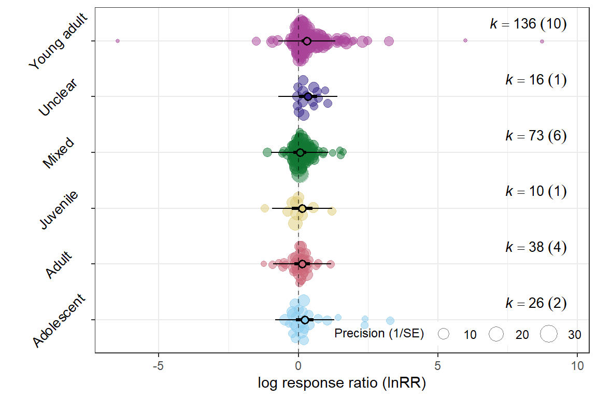
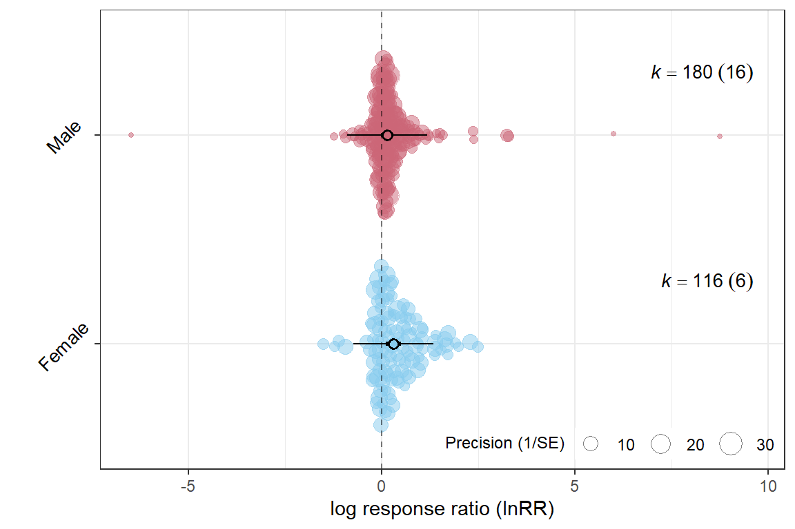
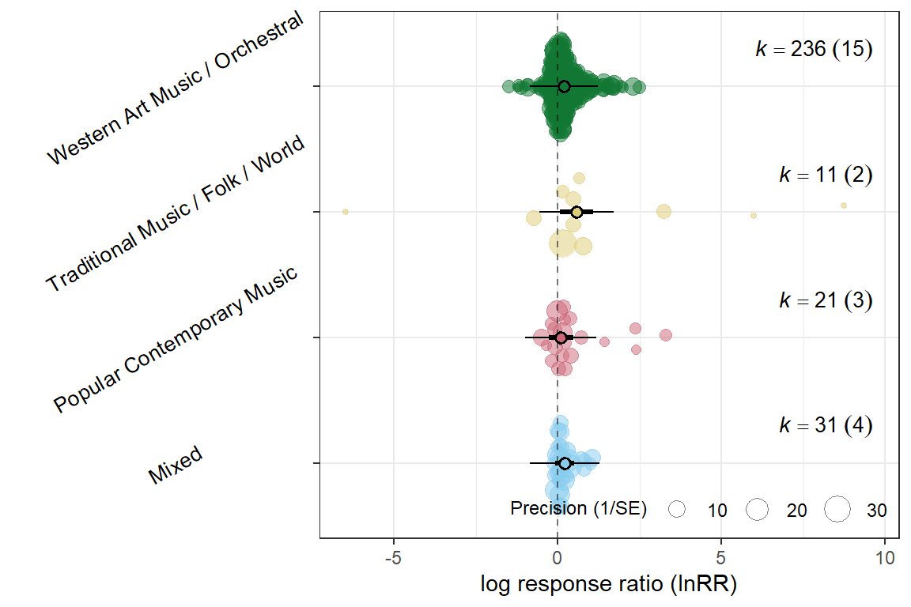
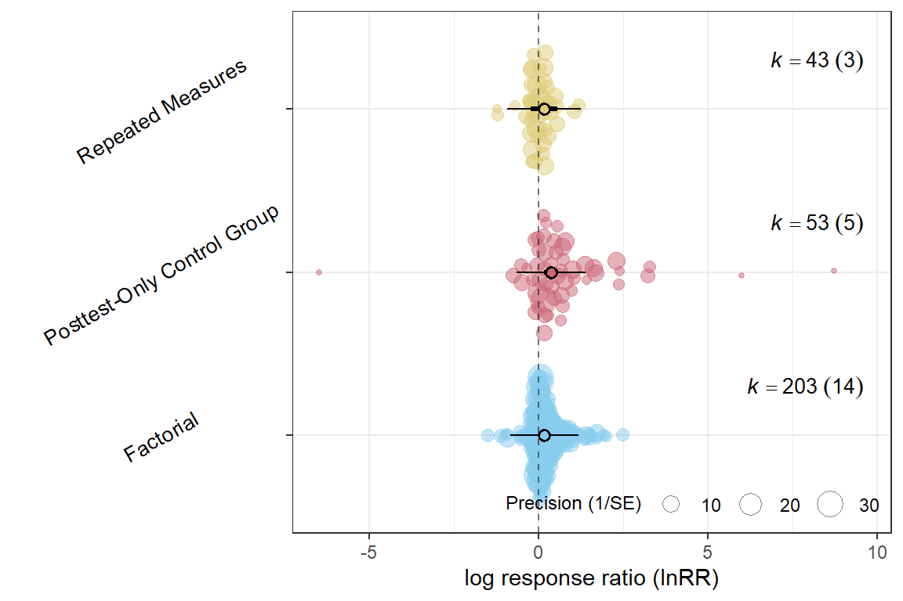
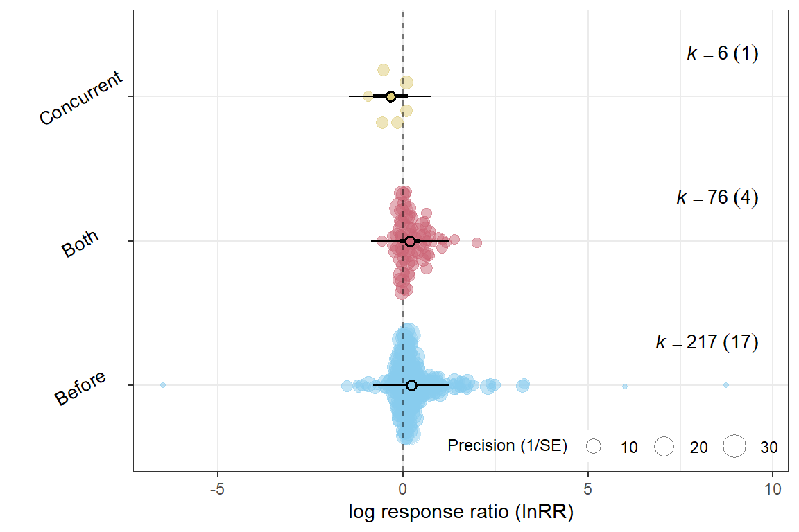
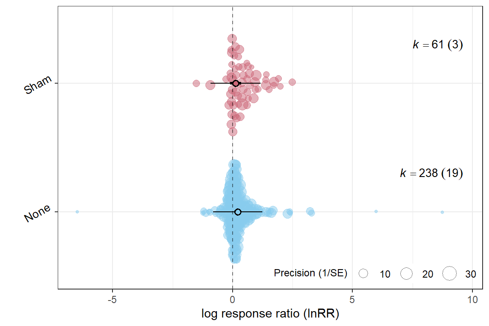

# 1. Identify and Filter Low-K Levels
# Calculate the count of ES_ID (k) for each level of Outcome_type
k_counts <- db %>%
group_by(Outcome_type) %>%
summarise(k_es = n())
# Identify the levels to keep (where k_es >= 5)
levels_to_keep <- k_counts %>%
filter(k_es >= 5) %>%
pull(Outcome_type)
# 2. Create the Filtered Data Frame
db_filtered <- db %>%
filter(Outcome_type %in% levels_to_keep)
# 3. Subset the VCV Matrix (CRITICAL STEP)
# Assumes VCV matrix rows/columns match the original 'db' data frame indices.
indices_to_keep <- which(db$Outcome_type %in% levels_to_keep)
VCV_filtered <- VCV[indices_to_keep, indices_to_keep]3 Uni-moderators
Note
Variable definitions:
| Variable Name | Definition |
|---|---|
ES_ID |
Unique row identifier for each \(\text{lnRR}\) effect size. |
Study_ID |
Identifier for the primary research paper. |
Cohort_ID |
Identifier for specific experimental groups within a study. |
Outcome_type |
The behavioral construct measured. Levels: Anxiety, Depression, both, unclear. |
Lifestage_exposure |
Animal’s developmental stage during music exposure. Levels: Adolescent, Juvenile, Young adult, Adult, Mixed, Unclear. |
Sex |
Sex of the subjects. Levels: Male, Female. |
Strain |
Specific animal strain or species used. |
Meta_genre |
Categorization of the music stimulus. Levels: Western Art Music / Orchestral, Popular Contemporary Music, Traditional Music / Folk / World, Mixed, Unclear. |
Music_exposure_duration |
Total time subjects were exposed to music. Levels: Acute, short, medium, long. |
Experimental_design |
Study’s methodological setup. Levels: Posttest-Only Control Group, Randomized Block, Factorial, Repeated Measures. |
Induced behaviour |
Whether the tested behavior was innate or experimentally induced. |
Relative_timing |
When music was administered relative to the behavioral test. Levels: before, concurrent, both, not specified. |
Experimental_procedures |
Identifies non-treatment controls for interventions. Levels: sham, none. |
3.1 Meta-regressions
mOT <- rma.mv(yi = lnRR,
V = VCV_filtered,
mods = ~ Outcome_type-1,
random = list(~1 | Study_ID,
~1 | ES_ID,
~1 | Strain),
test = "t",
method = "REML",
sparse = TRUE,
data = db_filtered)
summary(mOT)
Multivariate Meta-Analysis Model (k = 296; method: REML)
logLik Deviance AIC BIC AICc
-248.3243 496.6485 506.6485 525.0664 506.8569
Variance Components:
estim sqrt nlvls fixed factor
sigma^2.1 0.0489 0.2211 20 no Study_ID
sigma^2.2 0.2202 0.4692 296 no ES_ID
sigma^2.3 0.0000 0.0001 6 no Strain
Test for Residual Heterogeneity:
QE(df = 294) = 5618.6762, p-val < .0001
Test of Moderators (coefficients 1:2):
F(df1 = 2, df2 = 294) = 4.8896, p-val = 0.0081
Model Results:
estimate se tval df pval ci.lb ci.ub
Outcome_typeAnxiety 0.2066 0.0704 2.9335 294 0.0036 0.0680 0.3453
Outcome_typeDepression 0.2023 0.0912 2.2179 294 0.0273 0.0228 0.3817
Outcome_typeAnxiety **
Outcome_typeDepression *
---
Signif. codes: 0 '***' 0.001 '**' 0.01 '*' 0.05 '.' 0.1 ' ' 1r2OT <- round(r2_ml(mOT), 4)
r2OT R2_marginal R2_conditional
0.0000 0.1817 orchard_plot(mOT,
mod = "Outcome_type",
group = "Study_ID",
xlab = "log response ratio (lnRR)",
angle = 45) 
mLE <- rma.mv(yi = lnRR,
V = VCV,
mods = ~ Lifestage_exposure-1,
random = list(~1 | Study_ID,
~1 | ES_ID,
~1 | Strain),
test = "t",
method = "REML",
sparse = TRUE,
data = db)
summary(mLE)
Multivariate Meta-Analysis Model (k = 299; method: REML)
logLik Deviance AIC BIC AICc
-245.3274 490.6548 508.6548 541.7764 509.2909
Variance Components:
estim sqrt nlvls fixed factor
sigma^2.1 0.0392 0.1980 20 no Study_ID
sigma^2.2 0.2201 0.4692 299 no ES_ID
sigma^2.3 0.0039 0.0624 6 no Strain
Test for Residual Heterogeneity:
QE(df = 293) = 5545.5735, p-val < .0001
Test of Moderators (coefficients 1:6):
F(df1 = 6, df2 = 293) = 2.0357, p-val = 0.0609
Model Results:
estimate se tval df pval ci.lb
Lifestage_exposureAdolescent 0.2230 0.1597 1.3961 293 0.1637 -0.0914
Lifestage_exposureAdult 0.1355 0.1423 0.9516 293 0.3421 -0.1447
Lifestage_exposureJuvenile 0.1296 0.1899 0.6825 293 0.4954 -0.2441
Lifestage_exposureMixed 0.0556 0.1166 0.4766 293 0.6340 -0.1739
Lifestage_exposureUnclear 0.3436 0.1640 2.0945 293 0.0371 0.0207
Lifestage_exposureYoung adult 0.3014 0.0894 3.3707 293 0.0009 0.1254
ci.ub
Lifestage_exposureAdolescent 0.5374
Lifestage_exposureAdult 0.4156
Lifestage_exposureJuvenile 0.5033
Lifestage_exposureMixed 0.2850
Lifestage_exposureUnclear 0.6665 *
Lifestage_exposureYoung adult 0.4773 ***
---
Signif. codes: 0 '***' 0.001 '**' 0.01 '*' 0.05 '.' 0.1 ' ' 1r2LE <- round(r2_ml(mLE), 4)
r2LE R2_marginal R2_conditional
0.0420 0.1988 orchard_plot(mLE,
mod = "Lifestage_exposure",
group = "Study_ID",
xlab = "log response ratio (lnRR)",
angle = 45) 
# 1. Identify and Filter Low-K Levels
# Calculate the count of ES_ID (k) for each level of Sex
k_counts <- db %>%
group_by(Sex) %>%
summarise(k_es = n())
# Identify the levels to keep (where k_es >= 5)
levels_to_keep <- k_counts %>%
filter(k_es >= 5) %>%
pull(Sex)
# 2. Create the Filtered Data Frame
db_filtered <- db %>%
filter(Sex %in% levels_to_keep)
# 3. Subset the VCV Matrix (CRITICAL STEP)
# Assumes VCV matrix rows/columns match the original 'db' data frame indices.
indices_to_keep <- which(db$Sex %in% levels_to_keep)
VCV_filtered <- VCV[indices_to_keep, indices_to_keep]mSX <- rma.mv(yi = lnRR,
V = VCV_filtered,
mods = ~ Sex-1,
random = list(~1 | Study_ID,
~1 | ES_ID,
~1 | Strain),
test = "t",
method = "REML",
sparse = TRUE,
data = db_filtered)
summary(mSX)
Multivariate Meta-Analysis Model (k = 296; method: REML)
logLik Deviance AIC BIC AICc
-246.0788 492.1576 502.1576 520.5755 502.3659
Variance Components:
estim sqrt nlvls fixed factor
sigma^2.1 0.0416 0.2038 19 no Study_ID
sigma^2.2 0.2171 0.4660 296 no ES_ID
sigma^2.3 0.0092 0.0958 6 no Strain
Test for Residual Heterogeneity:
QE(df = 294) = 5665.7357, p-val < .0001
Test of Moderators (coefficients 1:2):
F(df1 = 2, df2 = 294) = 4.7418, p-val = 0.0094
Model Results:
estimate se tval df pval ci.lb ci.ub
SexFemale 0.3055 0.0996 3.0678 294 0.0024 0.1095 0.5015 **
SexMale 0.1516 0.0828 1.8307 294 0.0682 -0.0114 0.3145 .
---
Signif. codes: 0 '***' 0.001 '**' 0.01 '*' 0.05 '.' 0.1 ' ' 1r2SX <- round(r2_ml(mSX), 4)
r2SX R2_marginal R2_conditional
0.0207 0.2062 orchard_plot(mSX,
mod = "Sex",
group = "Study_ID",
xlab = "log response ratio (lnRR)",
angle = 45) 
Meta_genre
mMG <- rma.mv(yi = lnRR,
V = VCV,
mods = ~ Meta_genre-1,
random = list(~1 | Study_ID,
~1 | ES_ID,
~1 | Strain),
test = "t",
method = "REML",
sparse = TRUE,
data = db)
summary(mMG)
Multivariate Meta-Analysis Model (k = 299; method: REML)
logLik Deviance AIC BIC AICc
-246.5444 493.0888 507.0888 532.8976 507.4790
Variance Components:
estim sqrt nlvls fixed factor
sigma^2.1 0.0503 0.2242 20 no Study_ID
sigma^2.2 0.2169 0.4657 299 no ES_ID
sigma^2.3 0.0000 0.0000 6 no Strain
Test for Residual Heterogeneity:
QE(df = 295) = 5629.5336, p-val < .0001
Test of Moderators (coefficients 1:4):
F(df1 = 4, df2 = 295) = 3.0367, p-val = 0.0178
Model Results:
estimate se tval df
Meta_genreMixed 0.2102 0.1446 1.4534 295
Meta_genrePopular Contemporary Music 0.0928 0.1887 0.4920 295
Meta_genreTraditional Music / Folk / World 0.5706 0.2606 2.1897 295
Meta_genreWestern Art Music / Orchestral 0.1861 0.0762 2.4436 295
pval ci.lb ci.ub
Meta_genreMixed 0.1472 -0.0744 0.4947
Meta_genrePopular Contemporary Music 0.6231 -0.2785 0.4641
Meta_genreTraditional Music / Folk / World 0.0293 0.0578 1.0834 *
Meta_genreWestern Art Music / Orchestral 0.0151 0.0362 0.3360 *
---
Signif. codes: 0 '***' 0.001 '**' 0.01 '*' 0.05 '.' 0.1 ' ' 1r2MG <- round(r2_ml(mMG), 4)
r2MG R2_marginal R2_conditional
0.0221 0.2060 orchard_plot(mMG,
mod = "Meta_genre",
group = "Study_ID",
xlab = "log response ratio (lnRR)",
angle = 30) 
Music_exposure_duration
# 1. Identify and Filter Low-K Levels
# Calculate the count of ES_ID (k) for each level of Music_exposure_duration
k_counts <- db %>%
group_by(Music_exposure_duration) %>%
summarise(k_es = n())
# Identify the levels to keep (where k_es >= 5)
levels_to_keep <- k_counts %>%
filter(k_es >= 5) %>%
pull(Music_exposure_duration)
# 2. Create the Filtered Data Frame
db_filtered <- db %>%
filter(Music_exposure_duration %in% levels_to_keep)
# 3. Subset the VCV Matrix (CRITICAL STEP)
# Assumes VCV matrix rows/columns match the original 'db' data frame indices.
indices_to_keep <- which(db$Music_exposure_duration %in% levels_to_keep)
VCV_filtered <- VCV[indices_to_keep, indices_to_keep]mMED <- rma.mv(yi = lnRR,
V = VCV_filtered,
mods = ~ Music_exposure_duration-1,
random = list(~1 | Study_ID,
~1 | ES_ID,
~1 | Strain),
test = "t",
method = "REML",
sparse = TRUE,
data = db_filtered)
summary(mMED)
Multivariate Meta-Analysis Model (k = 298; method: REML)
logLik Deviance AIC BIC AICc
-246.8300 493.6600 505.6600 527.7818 505.9517
Variance Components:
estim sqrt nlvls fixed factor
sigma^2.1 0.0511 0.2261 20 no Study_ID
sigma^2.2 0.2189 0.4678 298 no ES_ID
sigma^2.3 0.0000 0.0000 6 no Strain
Test for Residual Heterogeneity:
QE(df = 295) = 5689.8379, p-val < .0001
Test of Moderators (coefficients 1:3):
F(df1 = 3, df2 = 295) = 3.6482, p-val = 0.0131
Model Results:
estimate se tval df pval ci.lb
Music_exposure_durationAcute 0.2579 0.1109 2.3261 295 0.0207 0.0397
Music_exposure_durationMedium 0.0657 0.1385 0.4743 295 0.6357 -0.2069
Music_exposure_durationShort 0.2402 0.1043 2.3041 295 0.0219 0.0350
ci.ub
Music_exposure_durationAcute 0.4760 *
Music_exposure_durationMedium 0.3383
Music_exposure_durationShort 0.4454 *
---
Signif. codes: 0 '***' 0.001 '**' 0.01 '*' 0.05 '.' 0.1 ' ' 1r2MED <- round(r2_ml(mMED), 4)
r2MED R2_marginal R2_conditional
0.0204 0.2059 orchard_plot(mMED,
mod = "Music_exposure_duration",
group = "Study_ID",
xlab = "log response ratio (lnRR)",
angle = 30) 
mEXD <- rma.mv(yi = lnRR,
V = VCV,
mods = ~ Experimental_design-1,
random = list(~1 | Study_ID,
~1 | ES_ID,
~1 | Strain),
test = "t",
method = "REML",
sparse = TRUE,
data = db)
summary(mEXD)
Multivariate Meta-Analysis Model (k = 299; method: REML)
logLik Deviance AIC BIC AICc
-246.4049 492.8098 504.8098 526.9520 505.1005
Variance Components:
estim sqrt nlvls fixed factor
sigma^2.1 0.0445 0.2109 20 no Study_ID
sigma^2.2 0.2164 0.4652 299 no ES_ID
sigma^2.3 0.0000 0.0000 6 no Strain
Test for Residual Heterogeneity:
QE(df = 296) = 5575.8872, p-val < .0001
Test of Moderators (coefficients 1:3):
F(df1 = 3, df2 = 296) = 4.8122, p-val = 0.0027
Model Results:
estimate se tval df
Experimental_designFactorial 0.1711 0.0698 2.4519 296
Experimental_designPosttest-Only Control Group 0.3699 0.1051 3.5187 296
Experimental_designRepeated Measures 0.1651 0.2040 0.8096 296
pval ci.lb ci.ub
Experimental_designFactorial 0.0148 0.0338 0.3084 *
Experimental_designPosttest-Only Control Group 0.0005 0.1630 0.5768 ***
Experimental_designRepeated Measures 0.4188 -0.2363 0.5665
---
Signif. codes: 0 '***' 0.001 '**' 0.01 '*' 0.05 '.' 0.1 ' ' 1r2EXD <- round(r2_ml(mEXD), 4)
r2EXD R2_marginal R2_conditional
0.0219 0.1888 orchard_plot(mEXD,
mod = "Experimental_design",
group = "Study_ID",
xlab = "log response ratio (lnRR)",
angle = 30) 
mIB <- rma.mv(yi = lnRR,
V = VCV,
mods = ~ `Induced behaviour`-1,
random = list(~1 | Study_ID,
~1 | ES_ID,
~1 | Strain),
test = "t",
method = "REML",
sparse = TRUE,
data = db)
summary(mIB)
Multivariate Meta-Analysis Model (k = 299; method: REML)
logLik Deviance AIC BIC AICc
-245.0899 490.1798 500.1798 518.6484 500.3860
Variance Components:
estim sqrt nlvls fixed factor
sigma^2.1 0.0482 0.2195 20 no Study_ID
sigma^2.2 0.2094 0.4576 299 no ES_ID
sigma^2.3 0.0000 0.0000 6 no Strain
Test for Residual Heterogeneity:
QE(df = 297) = 5340.4020, p-val < .0001
Test of Moderators (coefficients 1:2):
F(df1 = 2, df2 = 297) = 9.4197, p-val = 0.0001
Model Results:
estimate se tval df pval ci.lb
`Induced behaviour`Induced 0.4524 0.1055 4.2890 297 <.0001 0.2448
`Induced behaviour`Innate 0.1300 0.0695 1.8697 297 0.0625 -0.0068
ci.ub
`Induced behaviour`Induced 0.6600 ***
`Induced behaviour`Innate 0.2667 .
---
Signif. codes: 0 '***' 0.001 '**' 0.01 '*' 0.05 '.' 0.1 ' ' 1r2IB <- round(r2_ml(mIB), 4)
r2IB R2_marginal R2_conditional
0.0550 0.2317 orchard_plot(mIB,
mod = "Induced behaviour",
group = "Study_ID",
xlab = "log response ratio (lnRR)",
angle = 30) 
mRT <- rma.mv(yi = lnRR,
V = VCV,
mods = ~ Relative_timing-1,
random = list(~1 | Study_ID,
~1 | ES_ID,
~1 | Strain),
test = "t",
method = "REML",
sparse = TRUE,
data = db)
summary(mRT)
Multivariate Meta-Analysis Model (k = 299; method: REML)
logLik Deviance AIC BIC AICc
-245.9023 491.8046 503.8046 525.9468 504.0953
Variance Components:
estim sqrt nlvls fixed factor
sigma^2.1 0.0486 0.2205 20 no Study_ID
sigma^2.2 0.2145 0.4631 299 no ES_ID
sigma^2.3 0.0000 0.0000 6 no Strain
Test for Residual Heterogeneity:
QE(df = 296) = 5658.2330, p-val < .0001
Test of Moderators (coefficients 1:3):
F(df1 = 3, df2 = 296) = 5.1443, p-val = 0.0018
Model Results:
estimate se tval df pval ci.lb
Relative_timingBefore 0.2226 0.0711 3.1296 296 0.0019 0.0826
Relative_timingBoth 0.1856 0.1364 1.3604 296 0.1747 -0.0829
Relative_timingConcurrent -0.3384 0.2410 -1.4041 296 0.1614 -0.8126
ci.ub
Relative_timingBefore 0.3626 **
Relative_timingBoth 0.4541
Relative_timingConcurrent 0.1359
---
Signif. codes: 0 '***' 0.001 '**' 0.01 '*' 0.05 '.' 0.1 ' ' 1r2RT <- round(r2_ml(mRT), 4)
r2RT R2_marginal R2_conditional
0.0232 0.2038 orchard_plot(mRT,
mod = "Relative_timing",
group = "Study_ID",
xlab = "log response ratio (lnRR)",
angle = 30) 
mEXP <- rma.mv(yi = lnRR,
V = VCV,
mods = ~ Experimental_procedures-1,
random = list(~1 | Study_ID,
~1 | ES_ID,
~1 | Strain),
test = "t",
method = "REML",
sparse = TRUE,
data = db)
summary(mEXP)
Multivariate Meta-Analysis Model (k = 299; method: REML)
logLik Deviance AIC BIC AICc
-249.0351 498.0701 508.0701 526.5388 508.2763
Variance Components:
estim sqrt nlvls fixed factor
sigma^2.1 0.0541 0.2326 20 no Study_ID
sigma^2.2 0.2160 0.4648 299 no ES_ID
sigma^2.3 0.0000 0.0000 6 no Strain
Test for Residual Heterogeneity:
QE(df = 297) = 5655.5972, p-val < .0001
Test of Moderators (coefficients 1:2):
F(df1 = 2, df2 = 297) = 5.0007, p-val = 0.0073
Model Results:
estimate se tval df pval ci.lb
Experimental_proceduresNone 0.2171 0.0689 3.1523 297 0.0018 0.0816
Experimental_proceduresSham 0.1236 0.1149 1.0750 297 0.2833 -0.1026
ci.ub
Experimental_proceduresNone 0.3527 **
Experimental_proceduresSham 0.3498
---
Signif. codes: 0 '***' 0.001 '**' 0.01 '*' 0.05 '.' 0.1 ' ' 1r2EXP <- round(r2_ml(mEXP), 4)
r2EXP R2_marginal R2_conditional
0.0053 0.2045 orchard_plot(mEXP,
mod = "Experimental_procedures",
group = "Study_ID",
xlab = "log response ratio (lnRR)",
angle = 30) 